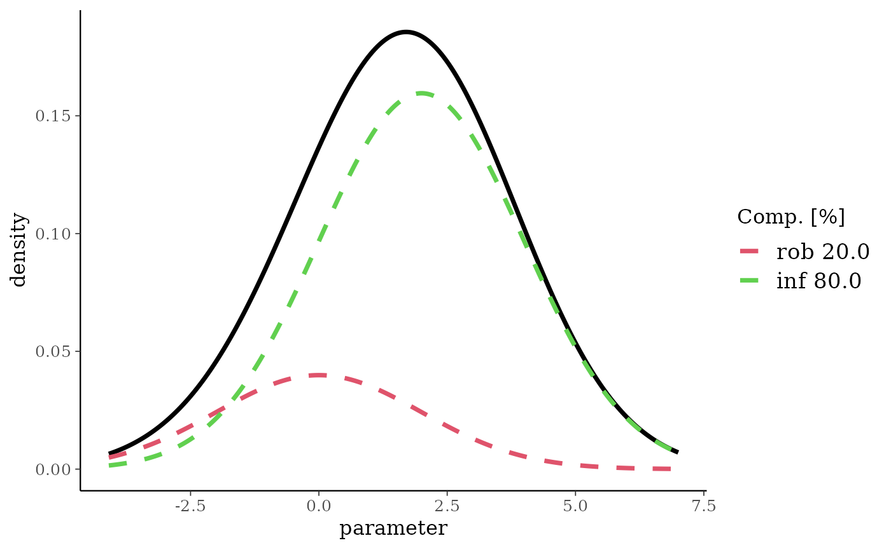
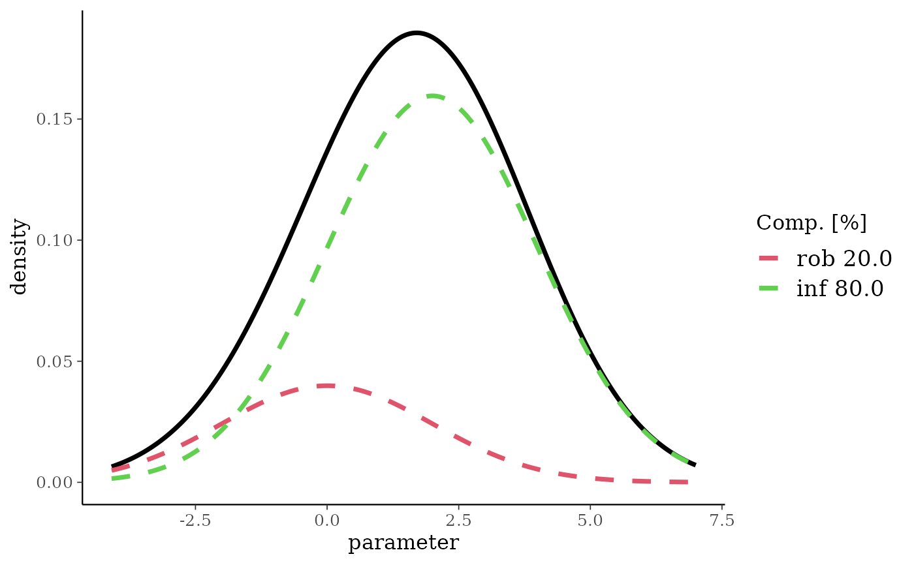

The normal mixture density and auxiliary functions.
Arguments
- ...
List of mixture components.
- sigma
Reference scale.
- param
Determines how the parameters in the list are interpreted. See details.
- m
Vector of means
- n
Vector of sample sizes.
- drop
Delete the dimensions of an array which have only one level.
- x
The mixture to print
- object
Normal mixture object.
- probs
Quantiles reported by the
summaryfunction.- value
New value of the reference scale
sigma.
Value
Returns a normal mixture with the specified mixture
components. mn2norm returns the mean and standard deviation
given a mean and sample size parametrization.
Details
Each entry in the ... argument list is expected to
be a triplet of numbers which defines the weight \(w_k\), first
and second parameter of the mixture component \(k\). A triplet
can optionally be named which will be used appropriately.
The first and second parameter can be given in different
parametrizations which is set by the param option:
- ms
Mean and standard deviation. Default.
- mn
Mean and number of observations.
ndeterminessvia the relation \(s=\sigma/\sqrt{n}\) with \(\sigma\) being the fixed reference scale.
The reference scale \(\sigma\) is the fixed standard deviation in
the one-parameter normal-normal model (observation standard
deviation). The function sigma can be used to query the
reference scale and may also be used to assign a new reference
scale, see examples below. In case the sigma is not
specified, the user has to supply sigma as argument to
functions which require a reference scale.
Examples
nm <- mixnorm(rob=c(0.2, 0, 2), inf=c(0.8, 2, 2), sigma=5)
print(nm)
#> Univariate normal mixture
#> Reference scale: 5
#> Mixture Components:
#> rob inf
#> w 0.2 0.8
#> m 0.0 2.0
#> s 2.0 2.0
summary(nm)
#> mean sd 2.5% 50.0% 97.5%
#> 1.600000 2.154066 -2.708104 1.631171 5.740143
plot(nm)

set.seed(57845)
mixSamp <- rmix(nm, 500)
plot(nm, samp=mixSamp)

# support defined by quantiles
qmix(nm, c(0.01, 0.99))
#> [1] -3.532815 6.491874
# density function
dmix(nm, seq(-5,5,by=2))
#> [1] 0.002101903 0.019963080 0.087013571 0.176032663 0.153777890 0.053559868
# distribution function
pmix(nm, seq(-5,5,by=2))
#> [1] 0.001428036 0.018329173 0.115153269 0.385122523 0.739808529 0.945312306
# the reference scale can be changed (it determines the ESS)
ess(nm)
#> Using default prior reference scale 5
#> [1] 5.404787
sigma(nm) <- 10
ess(nm)
#> Using default prior reference scale 10
#> [1] 21.61915